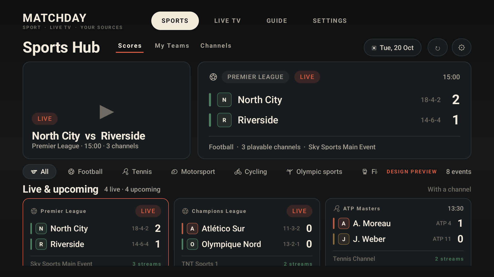
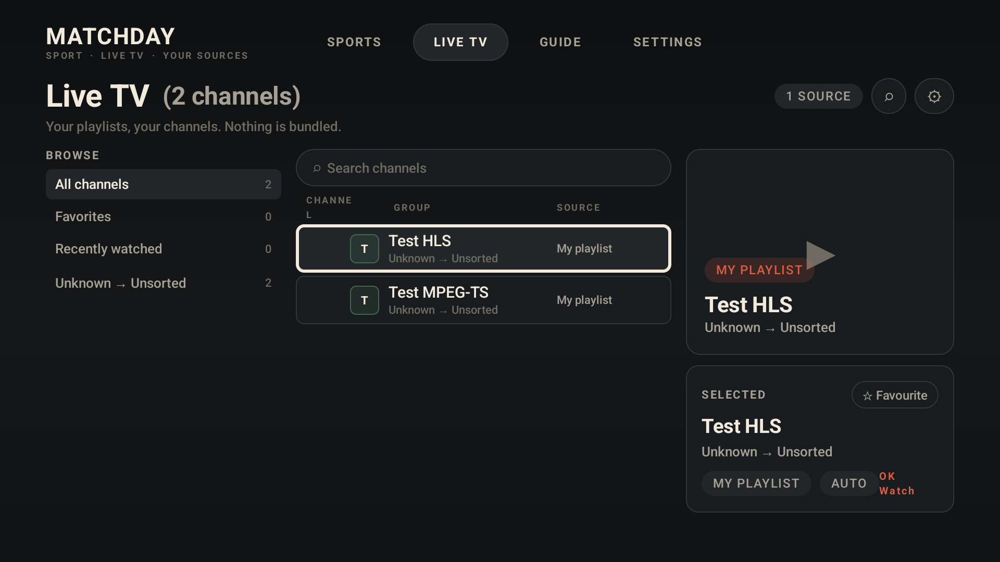
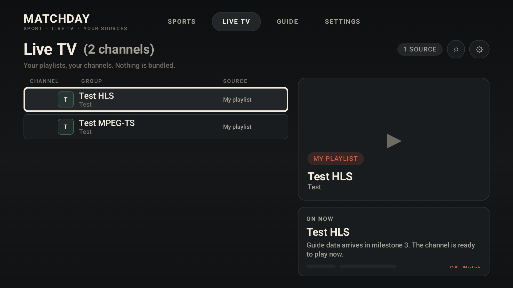
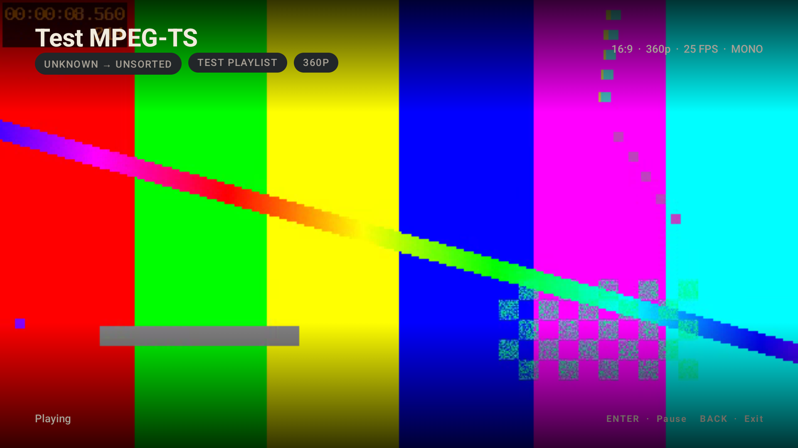
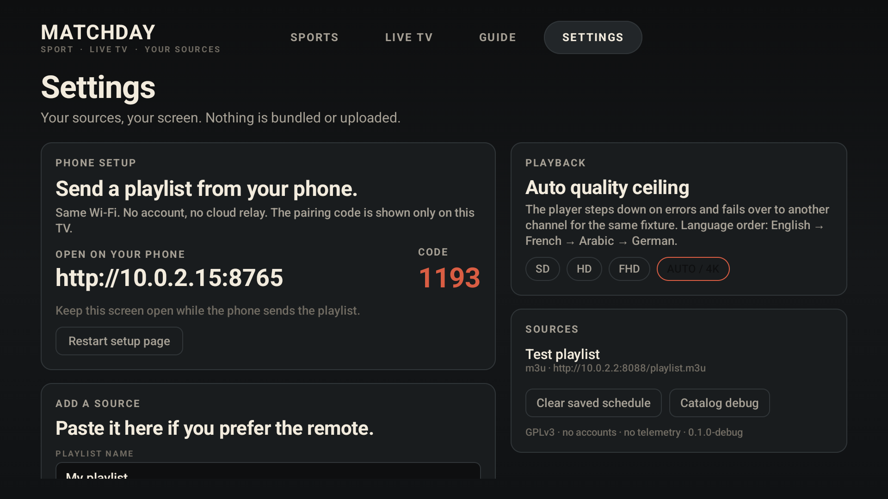
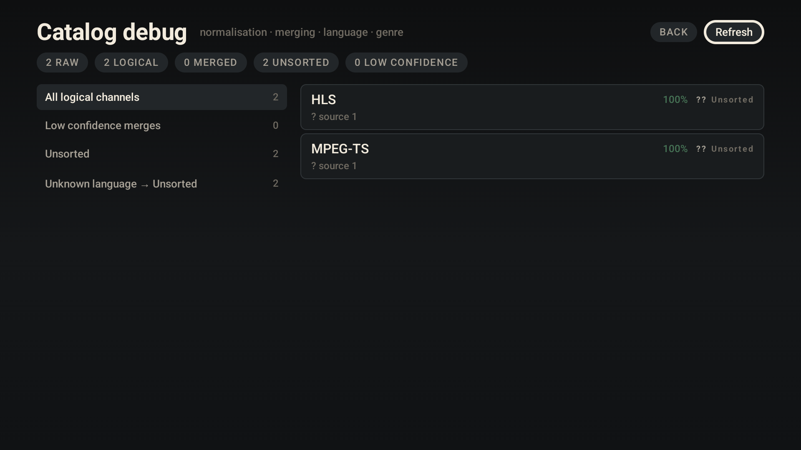

Matchday
Current UI captures · emulator · synthetic test data

SPORTS HUBDense scoreboard layout with sport icons, live preview, event grid.

LIVE TVThree-pane browser: language/genre rail, searchable channel table, preview and selected-channel panel.

LIVE TV · TABLEEarlier two-pane capture with the channel table and preview.

PLAYERFull-bleed raw MPEG-TS playback with the Matchday player overlay.

SETTINGSVisual direction, playback stack and GPL attribution.

CATALOG DEBUGMilestone 2 debug view: raw → logical, merges, language and genre.